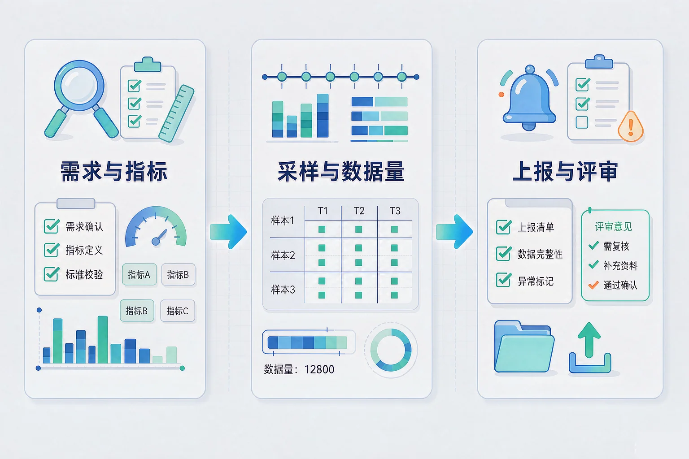
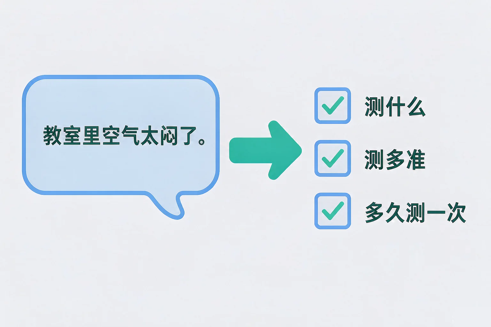
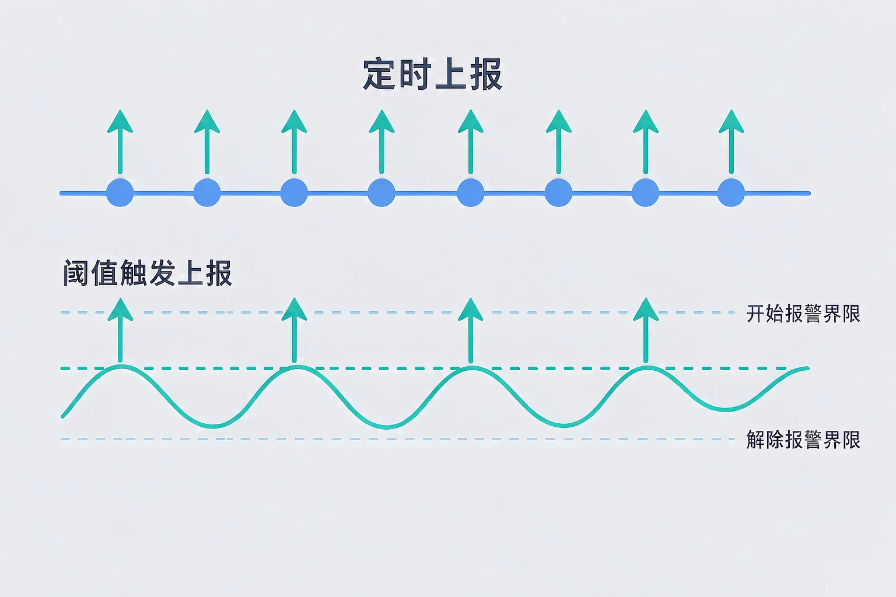

Gallery
v1.0.0 · skill v7.22.0
初中八年级 · 物联网与模块
从「我想做一个装置」到「它真能长期稳定地跑起来」，中间要补上哪些设计环节？

选一个你真正好奇的问题，后面的实验都会围着它转。
选择或输入后，这节课会围绕你的问题展开。
先凭直觉选一个，选完立刻看到解释——错了也没关系，正好知道要重点听哪里。
1. 老师提出的需求是「教室里空气太闷了」。要把它变成可测量的技术指标，最该补上的是：
需求要落地，必须回答三件事：测什么、测多准、多久测一次。这三件事定了，选型才有依据。错因提醒：把模糊需求直接当成指标用，是项目设计里最常见的错误。
2. 把一个采集间隔从 10 秒改成 60 秒，带来的变化是：
采样频率与数据量成正比，与漏检风险成反比，这是一对必须权衡的量。错因提醒：容易误认为只有「采得越勤越好」或「省电就要牺牲一切」，两个方向都不是无条件成立的。
3. 用阈值触发上报时，必须搭配迟滞，主要原因是：
迟滞让开始报警和解除报警用两个不同的界限，把抖动过滤掉。错因提醒：很多同学误认为迟滞只是把阈值抬高了，其实它改变的是报警状态的切换条件，不是报警门槛。
为什么要学这一课？你已经知道物联网由感知、网络、应用三层组成，也能把场景拆开看了。但真正动手做项目时会发现，一句「教室里空气不好」根本没法直接去实现，所以我们需要先把需求翻译成可测量的技术指标，再让指标去决定选什么传感器、用多快的节奏采集。
指标必须能被检验。「空气不好」无法检验，「二氧化碳浓度超过 1500 ppm 时上报」可以检验——前者是需求，后者才是指标。

🔍 深层理解 换个角度再看一遍这件事，看看能不能说出背后的原理。
看见它：同一个需求可以对应不同指标：测温度、测二氧化碳、测人数都能部分反映「闷」，但它们的检验标准和成本完全不同。
拆开它：任何一个采集指标都能拆成三段：测什么（对象）、测多准（精度）、多久一次（频率）。三项缺一项，方案就落不了地。
迁移它：这种把模糊要求翻译成可检验条款的做法到处都在用：体检报告有参考区间，考试评分有量规，工程验收有验收标准。
拖动三个滑块，看看采样间隔、设备台数和事件持续时间如何共同决定数据量与漏检风险。
采集和上报是两件事。采集是在设备这边按节奏读传感器，上报是把数据送到平台。很多方案在这两件事上搞混了：采集很快，上报也跟着很快，结果电池三天就没了。
定时上报
每隔固定时间报一次。实现简单、数据完整、平台好统计；代价是不管有没有变化都要报，费电也费流量。
变化与阈值触发上报
只在数值跨过阈值或明显变化时才报。省电、省流量、提醒有针对性；代价是平台看到的是事件而不是连续曲线。

最容易搞混的是把迟滞当成「把阈值抬高」。迟滞真正做的事是给报警状态的切换加两个不同的界限：开始报警用高一点的界，解除报警用低一点的界。它不改变你要防的那个界限，只是把抖动挡在外面。另一个常见错误是忘了失败重试与本地缓存——网络一断数据就丢，等恢复时那段记录永远补不回来。
下面是某间教室一天二十四小时的温度记录。切换两种上报模式，拖动阈值与迟滞，看上报次数和漏报情况怎么变。
这一天的温度（蓝色＝已上报，橙色加划线＝超过阈值但没报）
题目：有同学的方案是「温度传感器每 1 秒采集一次并立即上报，温度超过 30 ℃ 就报警」。它确实能跑起来，但装到教室里很快就不适用了。请指出问题并给出改进方案。
很多同学误认为「上报越勤越可靠」，把采集频率和上报频率混为一谈。其实可靠性来自三件事：该报的时刻报到了、数据没在中断期间丢掉、报警状态不会来回抖动——这三件事都跟「报得勤」没有必然关系。另一处容易搞混的是把迟滞当成提高阈值：迟滞改的是状态切换条件，不是报警门槛。
先凭直觉选一个，选完立刻看到解释——错了也没关系，正好知道要重点听哪里。
1. 下面哪句话是正确的？
设备可以密集采集、按需上报，两者分开设计正是省电省流量的关键。错因提醒：把采集与上报混为一谈，是这一课最常见的错误，也是耗电方案的主要来源。
2. 为了让报警不会被温度的小幅抖动触发，同时又不至于真的超温也不报，正确的做法是：
迟滞把抖动挡在门外，又保留了原本的警戒门槛。错因提醒：容易误认为迟滞就是抬高阈值——抬高阈值会让危险真的发生时也报不出来，是另一个常见错误。
3. 一个采集点每天上报 24 次、每次 8 字节。对「校园积水预警」这个场景来说，最需要担心的隐患是：
这个数据量微不足道，真正的风险在时效：预警类场景要求几乎即时发现。错因提醒：常见错误是盯着数据量算账，忽略了场景对响应时间的要求——评估方案要看场景的关键约束，不是看哪个数大。
先选场景，再依次选好感知设备、连接方式、上报策略和触发动作，然后提交评审。
五样都选好之后，点「提交评审」。
写下来，说给同桌听：如果评审结果里「感知设备与场景匹配」这一项没通过，为什么不能靠改上报策略来补救？
先凭直觉选一个，选完立刻看到解释——错了也没关系，正好知道要重点听哪里。
1. 农场要监测土壤湿度，位置在离机房 1800 米的田里，靠电池供电，每小时上报一次。下面哪种判断最站得住脚？
覆盖是这里的硬约束，而土壤湿度变化慢，每小时一次足够。错因提醒：「数据量小就随便选」忽略了覆盖距离这个决定性因素；「改成每秒上报」则会把电池迅速耗光。
2. 水箱要防止溢流：水位一到溢流口就要立刻关阀。下面哪一种上报策略最合适？
溢流是必须即时响应的事件，用阈值触发最合适。错因提醒：选「每 1 小时」是漏掉了时效要求，选「每秒全存」是把采集与上报混为一谈，两者都是常见错误。
3. 一套方案评审时，检查表里有「是否有失败重试与本地缓存」这一项。它要防的是：
重试与缓存解决的是数据可靠送达的问题。错因提醒：容易搞混的是把这项与精度、阈值问题混在一起——它们分别属于感知层的选型、应用层的策略和网络层的可靠性，要分开看。
回到开头那套装置：先定指标（测二氧化碳、分辨率到 50 ppm、每分钟采一次），再把采集与上报分开（采集保持每分钟，上报改为阈值与变化触发并加迟滞），最后补上重试与缓存。同样一批零件，改完这几处，它就能长期跑下去了。
给别人讲一遍：请用「指标、采样间隔、上报策略、迟滞」这四个词，把一个物联网方案的设计思路讲清楚。
三层练习，做完第一、二层就算通关；第三层留给愿意继续探索的同学。
⭐ 基础巩固（必做）
⭐⭐ 能力应用（必做）
⭐⭐⭐ 迁移挑战（选做）
左边是学它之前要先会的，右边是学会之后可以继续探索的，下面是同一领域的伙伴知识。
图谱正在加载：首次进入需下载知识索引（约 1–3 秒），加载完成后本行会自动消失。